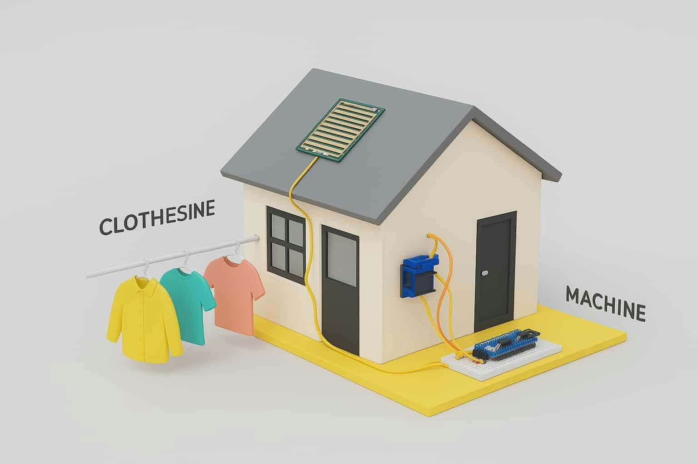
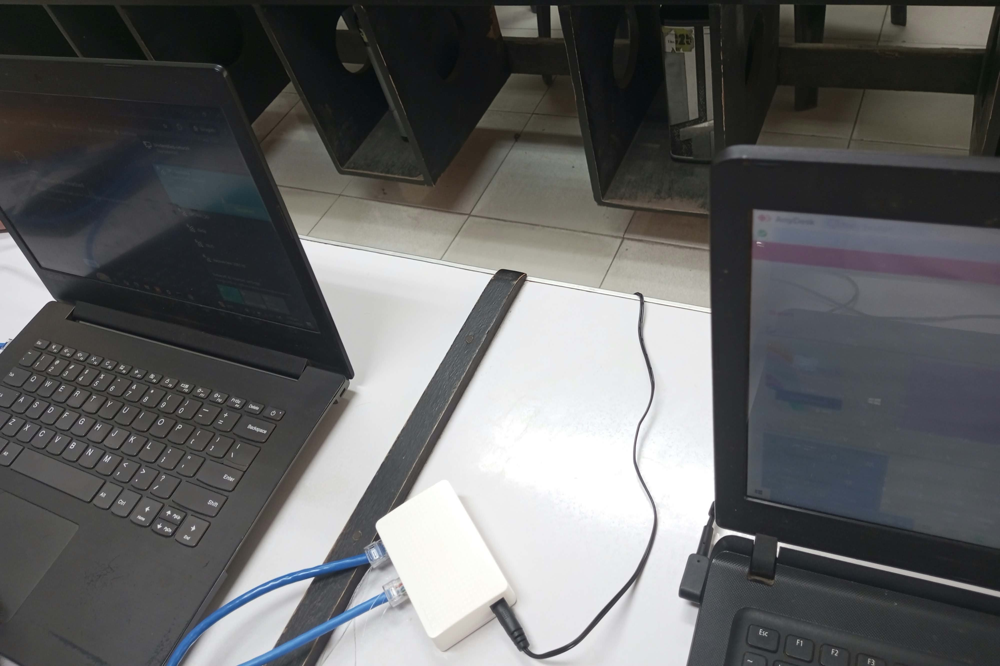

Project One
Our group developed an automated clothesline using Arduino to help protect clothes from sudden rain. We used Arduino, rain sensors, and motors to build the device. This research project at Southern Philippines College improved my programming, teamwork, and problem-solving skills.
View project

Project Two
Our group worked on a project about IP Address Assignment (Static IP) to understand how devices connect to a network. We learned how to assign static IP addresses and configure network settings. This project improved my knowledge of networking, technical skills, and problem-solving.
View project